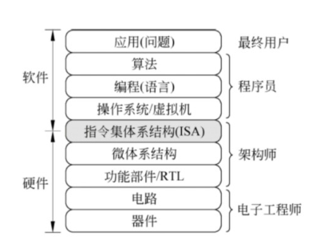
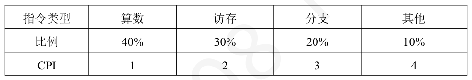
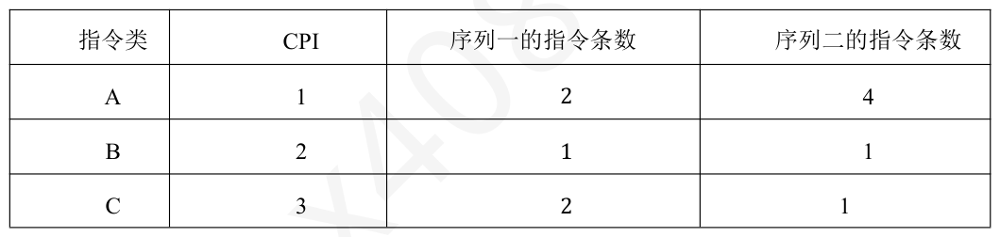
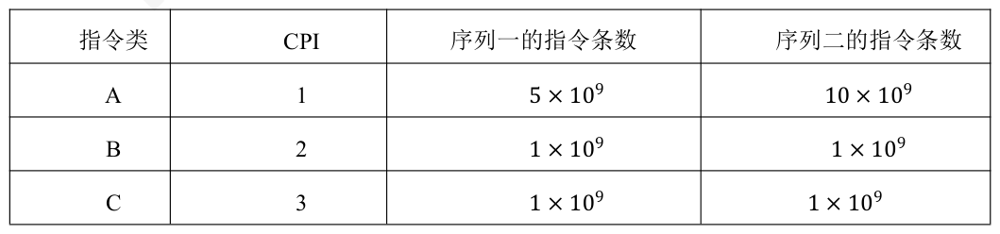

第 1 题
下面有关指令集体系结构的说法中，错误的是（ ）。
A． 指令集体系结构位于计算机软件和硬件的交界面上 B． 指令集体系结构是指低级语言程序员所看到的概念结构和功能特性 C． 程序员可见寄存器的长度、功能与编号不属于指令集体系结构的内容 D． 指令集体系结构的英文缩写是ISA 答案与解析 答案：C
指令集体系结构（Instruction Set Architecture，ISA）指令集体系结构是计算机硬件与系统软件之间的接口，指机器语言程序员或操作系统编译器、解释器设计人员所看到的计算机功能特性和概念性结构，A、B、D 正确。其核心部分是指令系统同时还包含数据类型和数据格式定义、寄存器组织、IO空间的编址和数据传输方式、中断结构、计算机状态的定义和切换、存储保护等，C 错误。
教材第 58 页 第 2 题
下面各选项中不属于指令集体系结构ISA 描述的内容的是（ ）。
A． 指令的寻址方式 B． 指令的操作码个数 C． 乘法器的设计方式 D． 通用寄存器的编号 答案与解析 答案：C
ISA规定了指令的功能与规范，不规定指令的内部实现细节，指令寻址方式、操作码个数、指令使用的通用寄存器的编号均属于指令格式内容，而乘法器实现方式不属于，C正确。
教材第 58 页 第 3 题
完整的计算机系统应包括（ ）。
A． 运算器、存储器、控制器 B． 外部设备和主机 C． 主机和实用程序 D． 配套的硬件设备和软件系统 答案与解析 答案：D
完整的计算机系统由硬件系统和软件系统两大部分组成，D正确；其中硬件系统由输入设备、输出设备、运算器、控制器、存储器5部分组成；软件系统由系统软件和应用软件两部分组成。
教材第 58 页 第 4 题
以下不属于冯·诺依曼计算机核心部件的是（ ）。
A． 运算器 B． 控制器 C． 存储器 D． 总线接口 答案与解析 答案：D
冯·诺依曼结构五大部件包括运算器、控制器、存储器、输入设备和输出设备，总线接口属于现代计算机的扩展结构，D错误。
教材第 58 页 第 5 题
计算机系统层次结构由低到高依次是（ ）。
A． 微程序级→机器语言级→操作系统级→汇编语言级→高级语言级 B． 微程序级→机器语言级→汇编语言级→操作系统级→高级语言级 C． 机器语言级→微程序级→操作系统级→汇编语言级→高级语言级 D． 微程序级→操作系统级→机器语言级→汇编语言级→高级语言级 答案与解析 答案：A
最低层为微程序级（硬件直接执行），向上依次为机器语言级、操作系统级、汇编语言级、高级语言级，A 正确。
教材第 58 页 第 6 题
以下有关程序编写和执行方面的叙述中，错误的是（ ）
A． 可用高级语言和低级语言编写出功能等价的程序 B． 高级语言和汇编语言源程序都不能在机器上直接执行 C． 编译程序员必须了解机器结构和指令系统 D． 汇编语言是一种与机器结构无关的编程语言 答案与解析 答案：D
A 正确，功能等价是指：完成相同功能的程序逻辑；比如可以用C语言（高级语言）写加法，也可以用汇编语言（低级语言）实现同样的功能； B 正确，能够在机器上直接执行的指令为机器指令，高级语言和汇编语言都需要通过翻译程序来翻译成机器语言程序才能在机器上执行。 C 正确，编译器需要把高级语言转换成目标机器的机器码；为了生成高效代码，编译器开发者必须熟悉目标系统的寄存器、指令集、存储体系结构等；所以编译器开发者（不是普通程序员）必须了解机器结构。 D 错误，汇编语言是机器语言的“助记符表示”，紧贴硬件结构，是高度依赖机器结构的语言。
教材第 58 页 第 7 题
计算机系统由（ ）两大部分组成。
A． 硬件系统和操作系统 B． 硬件系统和软件系统 C． 中央处理器和软件系统 D． 主机和外部设备 答案与解析 答案：B
计算机系统是由硬件系统和软件系统组成的有机整体。硬件系统是计算机的物理实体，如CPU、存储器等；软件系统包括系统软件（如语言处理程序（翻译程序）、操作系统、数据库管理系统）和应用软件，操作系统只是软件系统中的一部分，A错误；中央处理器属于硬件系统，C错误；主机和外部设备都属于硬件系统，D错误。
教材第 58 页 第 8 题
计算机分层系统中，属于“软件不可感知”的层次是（ ）
A． 汇编语言层 B． 微代码层 C． 操作系统层 D． 指令集架构层 答案与解析 答案：B
汇编语言层和操作系统层属于软件部分，而指令集架构层属于软件可感知部分，他是计算机硬件和软件之间的桥梁，是对指令系统的一种规定，具体的实现组织称为微体系结构（如加法器实现采用并行进位方式还是串行进位方式），属于软件不可感知部分。(ISA 规定计算机要“做什么”，微架构（微代码）定义“如何做”，软件只关心功能，不关心具体实现)。注意：不使用微程序控制器的计算机系统，没有微代码层。
教材第 59 页 第 9 题
加法器实现采用并行进位方式还是串行进位方式属于计算机系统层次中的（ ）层。
A． 操作系统/虚拟机 B． 指令集体系结构（ISA） C． 微体系结构 D． 功能部件 答案与解析 答案：C
• 在软件和硬件之间的界面就是指令集体系结构 (Instruction Set Architecture, ISA)，简称体系结构，它是软件和硬件之间接口的一个完整定义。 •ISA定义了一台计算机可以执行的所有指令的集合，每条指令规定了计算机执行什么操作，所处理的操作数存放的地址空间以及操作数类型。 •ISA 规定的内容包括数据类型及格式，指令格式，寻址方式和可访问地址空间大小，程序可访问的寄存器个数、位数和编号、控制寄存器的定义、I/O空间的编址方式、中断结构、机器工作状态的定义和切换、输入输出结构和数据传送方式、存储保护方式等。因此，可以看出，指令集体系结构是指软件能感知到的部分，也称软件可见部分。 ISA是对指令系统的一种规定或结构规范，具体实现的组织称为微体系结构 • (microarchitecture)，简称微架构。 ISA和微体系结构是两个不同层面上的概念，微体系结构是软件不可感知的部分。例如，加法器采用串行进位方式还是并行进位方式实现属于微体系结构。相同的ISA 可能具有不同的微体系结构，例如，对于Intel x86这种ISA，很多处理器的组织方式不同，即具有不同的微架构，但因为它们具有相同的ISA，因此，一种处理器运行的程序，在另一种处理器上也能运行。微体系结构最终是由逻辑电路(logiccircuit)实现的，微架构中的一个功能部件可以用不同的逻 • 辑电路来实现，用不同的逻辑实现方式得到的性能和成本有差异。最后，每个基本的逻辑电路都是按照特定的器件技术(devicetechnology)实现的。例如， • CMOS电路中使用的器件和NMOS 电路中使用的器件不同。

教材第 59 页 第 10 题
下面不属于冯诺依曼计算机主机部分的部件是（ ）。
A． 内部存储器 B． 磁盘 C． 运算器 D． 控制器 答案与解析 答案：B
主机包含CPU和内存，所以磁盘不包括在主机内，B错误。
教材第 59 页 第 11 题
下列属于应用软件的是（ ）。
A． 操作系统 B． 编译程序 C． 链接程序 D． 文本处理程序 答案与解析 答案：D
计算机的软件可以分为系统软件和应用软件两大类。其中，系统软件主要用来管理整个计算机系统、监视服务，使系统资源得到合理调度，高效运行，它包括标准程序库、语言处理程序、操作系统、服务程序、数据库管理系统、网络软件等；应用软件是根据任务需要所编制的各种程序，如科学计算程序、数据处理程序、过程控制程序、事务管理程序、文本处理程序等。操作系统是系统运行的必要条件，所以其属于系统软件，A错误。编译程序和汇编程序均属于系统软件中的语言处理程序，B、C错误。链接程序将经过编译后的目标文件处理为最终的可执行信息，在只有一个源程序文件，而又不需要调用某个库中的子程序的情况下，也必须用链接程序对目标文件进行处理，以生成可执行文件，故其属于系统软件，D正确。
教材第 59 页 第 12 题
以下功能通常由硬件直接实现的是（ ）。
A． 进程调度 B． 浮点运算 C． 文件系统管理 D． 中断处理程序 答案与解析 答案：B
现代CPU普遍通过浮点运算部件（Float Point Unit, FPU）实现浮点运算，其他选项属于操作系统软件功能，B正确。
教材第 59 页 第 13 题
指令集体系结构（ISA）的作用是（ ）。
A． 定义硬件逻辑设计规范 B． 规定软件与硬件的交互接口 C． 优化操作系统内核性能 D． 管理存储器层次结构 答案与解析 答案：B
ISA是软硬件的分界面，规定编程可见的寄存器、指令格式和寻址方式等，B正确。
教材第 59 页 第 14 题
下列说法正确的是（ ）。
A． 在冯·诺依曼计算机中，指令流是由数据流驱动的。 B． 执行指令时，指令在主存中的地址存放在指令寄存器中。 C． 指令周期是指CPU 从主存中读出一条指令的时间。 D． 取指周期的操作与指令的操作码无关。 答案与解析 答案：D
在冯·诺依曼计算机中，数据流是由指令流来驱动的，A错误。在执行指令时，存放在指令寄存器中的是指令而不是指令的地址，B错误。指令周期是指CPU从主存中读出指令，分析取数并执行完该指令的全部时间，C错误。
教材第 59 页 第 15 题
在冯·诺依曼计算机中，CPU 区分从存储器中取出的是指令还是数据的依据是（ ）
A． 指令和数据所在的存储单元地址不同 B． 访问指令和访问数据所处的指令执行阶段不同 C． 访问指令和访问数据的寻址方式不同 D． 指令和数据表示方式不同 答案与解析 答案：B
在冯·诺依曼计算机中，指令和数据以同等地位存放于存储器中，都根据地址访存，这并不是CPU 区分指令和数据的方法，A，C错误。计算机中将时刻划分为不同的阶段，其中，取指阶段从存储器中取出的是指令，执行阶段从存储器中取出的是数据，CPU正是通过这种方式来区分指令和数据的，B 正确。无论是指令还是数据，在计算机中都使用二进制数表示，D 错误。
教材第 59 页 第 16 题
在计算机中编写的高级语言程序，都必须被转换为一系列的低级机器指令，其中常见的语言处理程序为编译程序和解释程序，那么下列关于两者的说法正确的是（）。
A． 编译程序生成的目标代码具有良好的可移植性，解释程序生成的目标代码执行效率高 B． 编译程序适合执行时间短、运行频率高的程序，解释程序适合执行时间长、运行频率低的程序 C． 编译程序和解释程序在执行过程中，都需要将整个源程序转换为目标程序再执行 D． 编译程序产生的目标代码执行效率高，但可移植性较差；解释程序具有较好的可移植性，但执行效率较低 答案与解析 答案：D
编译程序一次性将整个源程序转换目标程序（通常为机器代码），然后由处理器执行目标程序。这样可以实现较高的执行效率，但目标代码通常是特定于某种处理器架构的，因此可移植性较差。解释程序则逐条解释并执行源程序，不会生成一个完整的目标程序，这样可以在不同的处理器架构上运行，具有较好的可移植性，但执行效率相对较低，D正确，A、C错误。编译程序和解释程序的适用场景并不是以执行时间和运行频率来区分的。实际上，编译程序和解释程序的主要区别在于执行效率和可移植性。编译程序适用于对执行效率要求较高的程序，解释程序则适用于对可移植性要求较高的程序，或者在开发过程中需要快速调试的场景，B错误。
教材第 59 页 第 17 题
以下关于MIPS 的描述错误的是（ ）。
A． MIPS 越高实际性能不一定越好 B． MIPS 依赖于具体指令集 C． 主频为4GHz 且CPI 为2 的处理器MIPS 为2000 D． MIPS 能够准确比较不同指令集机器的性能 答案与解析 答案：D
MIPS受指令集影响，很难准确比较出不同ISA的机器性能，D错误。
教材第 59 页 第 18 题
关于计算机性能指标，下列说法错误的是（ ）。
A． 系统响应时间是指从用户发出请求到系统给出最终响应结果的总时间 B． 总线带宽不仅与总线时钟频率有关，还与总线宽度相关 C． 若两台计算机的MIPS 值相同，则它们执行相同程序的速度一定相同 D． 磁盘I/O 数据传输率会受到磁盘转速、寻道时间等因素影响 答案与解析 答案：C
MIPS只是衡量计算机运算速度的一个指标，两台计算机MIPS值相同，但指令集不同、程序中各类指令占比不同等都会导致执行相同程序的速度不同，C错误。A选项是系统响应时间的正确定义；总线带宽=总线时钟频率×总线宽度/ 8（单位转换为字节），B正确；磁盘I/O数据传输率与磁盘转速、寻道时间等密切相关，D正确。
教材第 60 页 第 19 题
在评估计算机性能时，第一台计算机使用基准测试程序得到的结果为每秒执行10000 轮整数运算，第二台计算机使用该基准测试程序得到的结果为每秒执行15000 轮整数运算，仅考虑该测试结果，下列说法正确的是（）。
A． 第二台计算机执行整数运算的速度一定比第一台快50% B． 第二台计算机在处理通用任务时性能比第一台好50% C． 基准测试主要针对整数处理性能，第二台计算机在整数处理上可能更优 D． 由于基准测试程序单一，无法得出任何有效结论 答案与解析 答案：C
题目中可看出该基准测试程序主要侧重于整数处理性能的评估，第二台计算机测试结果更高，说明在整数处理上可能更优，但不能就此得出执行整数运算速度一定快50%，因为测试存在局限性，A错误，C正确；该基准测试不能代表通用任务处理性能，B错误；虽然基准测试程序单一，但能在一定程度上反映整数处理性能，D错误。
教材第 60 页 第 20 题
若某处理器指令频度分布如下。则平均CPI 为（ ）。

A． 1.8 B． 2.0 C． 2.2 D． 2.4 答案与解析 答案：B
0.4×1 + 0.3×2 + 0.2×3 + 0.1×4 = 2.0，B正确。 1 × 106 × 2/2 × 109 = 1 × 10−3 s。B机时间= 0.8 × 106 ×
教材第 60 页 第 21 题
某计算机A 和B 参数如下：A 时钟频率为2 GHz，平均CPI = 2，执行100 万条指令；B 时钟频率为3 GHz，CPI = 3，执行80 万条指令。哪台机器执行时间更短？
A． A 机执行时间更短 B． B 机执行时间更短 C． 两机执行时间相同 D． 无法比较 答案与解析 答案：B
A执行时间= 3/3 × 109 = 0.8 × 10−3 s。显然B执行时间更短，B正确。
教材第 60 页 第 22 题
下列因素中通常不会影响一个CPU 的平均CPI 的是（ ）。
A． 时钟频率 B． 指令系统结构 C． 微体系结构 D． 指令调度策略 答案与解析 答案：A
CPI与CPU的时钟频率无关。时钟频率决定时间尺度，而CPI是周期/指令的比值，受指令集和实现等因素影响，不受频率本身影响。时钟频率不影响CPI，而是影响总执行时间， A错误；微体系结构（如流水线、超标量、分支预测等）决定硬件执行指令的效率；指令调度策略 （如编译器静态调度或硬件动态调度）用于优化指令执行顺序，减少数据依赖或控制依赖导致的冒险；指令系统结构（如RISC或CISC）直接决定指令的复杂度和执行效率，都会影响CPI，故B、C、D正确。
教材第 60 页 第 23 题
有计算机M 的主频为100MHz，已知在M 上乘法指令的CPI 为102，左移指令的CPI 为2。计算机上程序P 的执行时间为12s。将该程序中所有的乘4 指令都换成左移两位的指令以进行优化，得到程序P'的执行时间为10s。则P 中乘法指令被换成左移指令的数量是（ ）。
A． 1 × 106 B． 2 × 106 C． 3 × 106 D． 4 × 106 答案与解析 答案：B
P执行时间比P'多了2s，对应时钟周期数为。而乘4指令的CPI比左移指令的CPI大100，即将一条乘4指令换成左移指令能节省100个2×108 100 = 2 × 10 6 条， B 正确。 时钟周期，故替换的指令数为
教材第 60 页 第 24 题
下列说法正确的是（ ）。
A． 兼容性是计算机的一个重要性能，通常是指向后兼容，即旧型号计算机的软件可以不加修改地在新型号计算机上运行。系列机通常有这种兼容性 B． 决定计算机计算精度的主要技术指标是计算机的字长 C． 计算机“运算速度”指标的含义是指每秒钟能执行多少条操作系统的命令 D． 利用大规模集成电路技术把计算机的运算部件和控制部件做在一块集成电路芯片上，这样的一块芯片叫做单片机 答案与解析 答案：B
兼容性包括数据和文件的兼容、程序兼容、系统兼容和设备兼容，微型计算机通常具有这种兼容性，A错误。“运算速度”指标的含义是指每秒钟能执行多少条指令，C错误。计算机的运算部件和控制部件做在一块集成电路芯片上，这样的一块芯片叫做CPU，D错误。
教材第 60 页 第 25 题
假设一台计算机的I/O 处理占整个系统运行时间的10%，当CPU 性能改进到原来的10 倍，而I/O 性能仅改进为原来的两倍时，系统总体性能改进获得的加速比为（ ）。
A． 5.26 倍 B． 10 倍 C． 2 倍 D． 7.14 倍 答案与解析 答案：D
加速比=1/（10%/2+90%/10）=7.14，D正确。
教材第 61 页 第 26 题
以下给出了改善计算机性能的4 种措施：
A． ①、②和③ B． ①、②和④ C． ①、③和④ D． 全部 答案与解析 答案：D
①程序的执行时间=平均CPI*指令条数/机器时钟频率，提高机器时钟频率可以缩短执行时间；
教材第 61 页 第 27 题
CPU 的CPI 与下列哪个因素无关（ ）。
A． 时钟周期 B． 系统结构 C． 指令集 D． 计算机组织 答案与解析 答案：A
CPI是指每条指令所需要的时钟周期数，跟具体时钟周期的长短无关（时钟频率与时钟周期互为倒数，所以跟主频也无关），A错误。
教材第 61 页 第 28 题
假设微处理器的主振频率为30MHz，2 个时钟周期组成一个机器周期，一条指令的平均CPI为3，则它的平均运算速度为（）MIPS。
A． 10 B． 5 C． 15 D． 30 答案与解析 答案：A
CPI是一条指令执行需要的时钟数，因此MIPS=30/3=10，机器周期是干扰项， A正确。
教材第 61 页 第 29 题
假定编译器对高级语言的某条语句可以编译生成两种不同的指令序列，A，B，C 三类指令的CPI 和两种不同序列中所含的三类指令的条数如下表所示，则下列结论错误的是（ ）。点击图片可查看完整电子表格

A． 序列1 比序列2 少一条指令 B． 序列1 比序列2 执行速度快 C． 序列1 的总时钟周期数比序列2 多1 个 D． 序列1 的CPI 比序列2 的CPI 大 答案与解析 答案：B
序列一一共5条指令，序列二一共6条，A正确；执行速度即每执行一条指令需要的时间，计算平均CPI即可，序列一的平均CPI=（2×1+1×2+2×3）/5=2，序列二平均CPI= （4×1+1×2+1×3 ）/6=1.5 ，序列二执行速度比较快，B错误，D正确；序列一总时钟周期数 =2×1+1×2+2×3=10，序列二总时钟周期数=4×1+1×2+1×3=9，C正确。时钟频率1𝑠/时钟周期 ∗10−6 =∗10−6 = 1𝑠
教材第 61 页 第 30 题
假定用不同的编译器对同一个程序进行编译生成不同的目标代码指令序列，A、B 和C 三类指令的CPI 和两种不同指令序列中所含的三类指令条数见下表。两个指令序列都在时钟周期为2ns 的机器上运行。根据计算得到其MIPS 指标和执行速度两方面的结论为（）。

A． 序列一的MIPS 数比序列二多50，序列一的执行速度也比序列二快10s B． 序列二的MIPS 数比序列一多50，但序列一的执行速度比序列二快10s C． 序列一的MIPS 数比序列一多100，序列一的执行速度也比序列二快20s D． 序列二的MIPS 数比序列一多100，但序列一的执行速度比序列二快20s 答案与解析 答案：B
𝑀𝐼𝑃𝑆= 每秒执行多少兆条指令= ∗ 𝐶𝑃𝐼平均𝐶𝑃𝐼平均2𝑛𝑠∗𝐶𝑃𝐼平均10−6 =500 序列一：时钟总数是1 ∗5 ∗109 + 2 ∗1 ∗109 + 3 ∗1 ∗109 = 10 ∗109 ，𝐶𝑃𝐼平均 = 𝐶𝑃𝐼平均10∗109 时钟总数500107 ， 𝑀𝐼𝑃𝑆= 指令总条数 = 7∗10 9 = = 350107序列二：时钟总数是1 ∗10 ∗109 + 2 ∗1 ∗109 + 3 ∗1 ∗109 = 15 ∗109 ， = 15 ∗10 9 𝐶𝑃𝐼平均 =时钟总数 12 ∗109 = 5 4， 𝑀𝐼𝑃𝑆= 500 = 4005指令总条数4所以序列二的MIPS 数比序列一多50。执行完序列一需要时钟总数∗时钟周期= 10 ∗109 ∗2𝑛𝑠= 20𝑠执行完序列二需要时钟总数∗时钟周期= 15 ∗109 ∗2𝑛𝑠= 30𝑠所以序列一的执行速度比序列二快10s，答案选B。
教材第 61 页